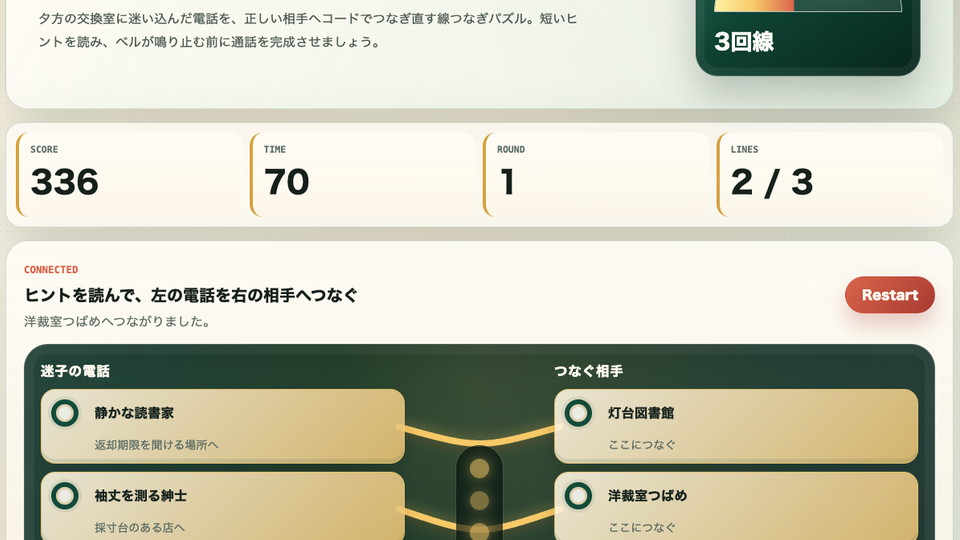

遊び方
- 左側の迷子電話を選び、依頼文を確認します。
- ヒントに合う右側の相手を選ぶとコードがつながります。
- 全ての回線をつなぐと次の交換台へ進み、回線数が少しずつ増えます。
線つなぎ / 脳トレ / 無料ブラウザゲーム
迷子電話交換室は、昭和レトロな電話交換台で迷子の通話を正しい相手へつなぐ無料ブラウザゲームです。左の依頼文を読み、対応する右の相手へコードをつないで、制限時間内に交換台をさばいていきます。

依頼文の名詞だけで判断せず、「場所」「店の役割」「音や匂い」のヒントをまとめて読むと誤接続が減ります。迷ったら先に分かりやすい回線からつなぐのが安定します。
線つなぎ パズル、無料 ブラウザゲーム 暇つぶし、短時間で遊べる ミニゲーム、インストール不要 ゲームを探している人向けの読み取り脳トレです。反射だけでなく、短い文章から正しい相手を見つける判断力を使います。
タップだけで遊べるため、スマホで遊べる 無料ゲームとしても使いやすいです。PC スマホ ブラウザゲームとして、短い休憩時間にもすぐ始められます。
コードがつながる見た目の気持ちよさと、ヒントを読んで一瞬で判断するテンポを両立しています。交換台が進むほど回線数が増え、短時間でも読み間違いの緊張感が出ます。
はい。無料ブラウザゲーム広場で、インストール不要で無料プレイできます。
はい。左の電話と右の相手をタップするだけで遊べます。
最初は少ない回線から始まるため、初めてでも遊びやすい難易度です。
迷子電話交換室と近い無料ブラウザゲームを、遊び方や端末別の入口から探せます。